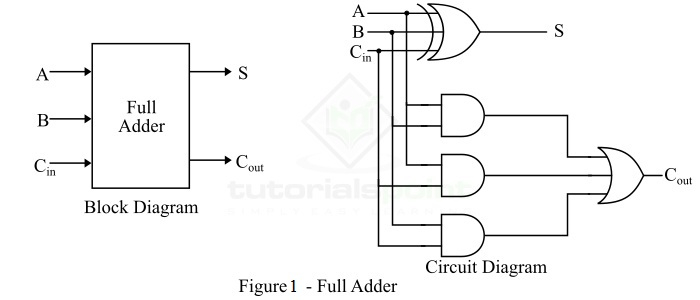

🧰 Combinational Circuits
Combinational logic circuits produce outputs based solely on current inputs. There’s no memory element — past inputs don’t affect output.
🧱 Key Building Blocks
- 🔀 Multiplexers (MUX): Select one input from many
- 🔁 Demultiplexers (DEMUX): Route one input to multiple outputs
- 📤 Encoders: Convert 2ⁿ inputs to n-bit output
- 📥 Decoders: Convert n-bit input to 2ⁿ outputs
- ➕ Adders: Perform binary addition
📊 Truth Table Example – Half Adder
| A | B | Sum (S) | Carry (C) |
|---|
| 0 | 0 | 0 | 0 |
| 0 | 1 | 1 | 0 |
| 1 | 0 | 1 | 0 |
| 1 | 1 | 0 | 1 |
Half Adder: Sum = A ⊕ B, Carry = A · B
📚 Example Circuit – Full Adder

Full Adder Equations:
Sum = A ⊕ B ⊕ Cin
Cout = AB + BCin + ACin
🎞️ Animation – MUX Switching Logic
A 4:1 MUX selects one of 4 inputs based on 2 control lines. Animation shows switching behavior.
🧠 Quick Quiz
Q1: What’s the sum output of a half adder when A=1, B=1?
Answer: Sum = 0, Carry = 1
Q2: What’s the equation for a full adder’s sum?
Answer: Sum = A ⊕ B ⊕ Cin
Q3: How many outputs does a 3-to-8 decoder have?
Answer: 8 outputs
← Back to Digital electronics topics